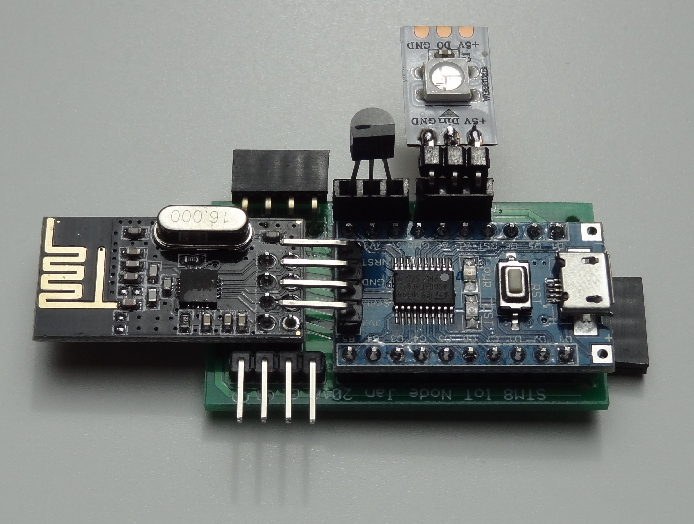
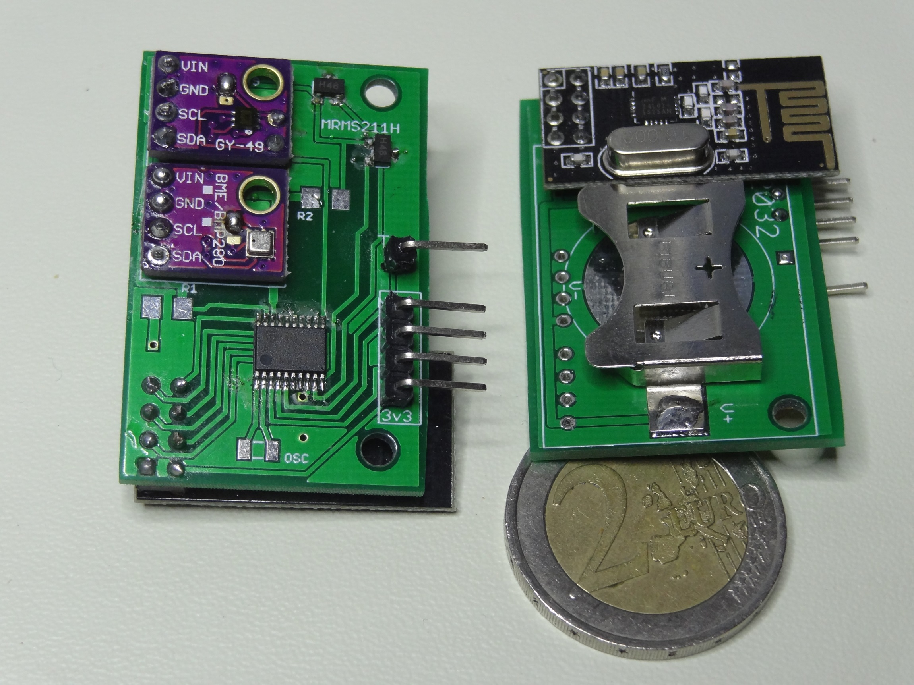
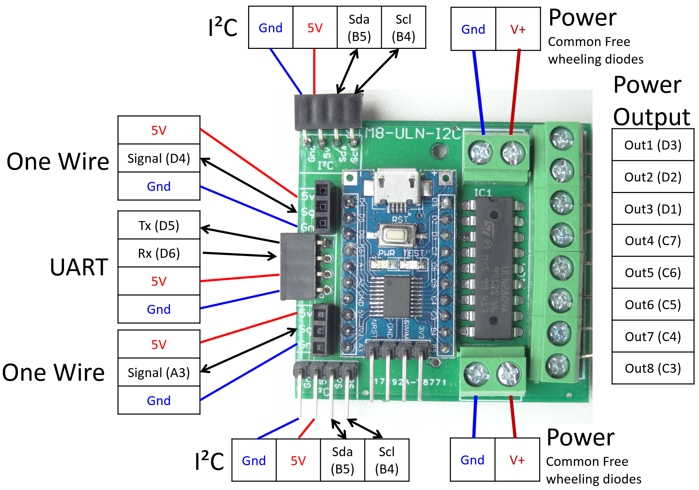
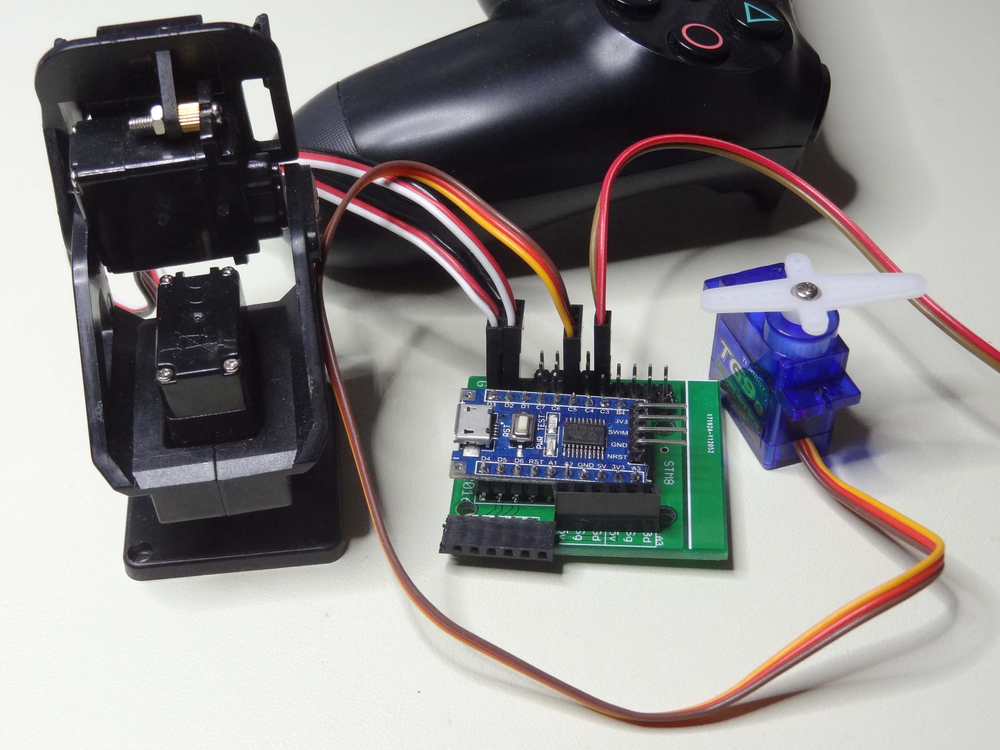
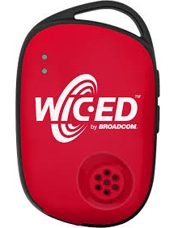
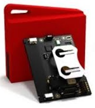
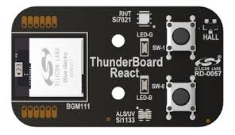
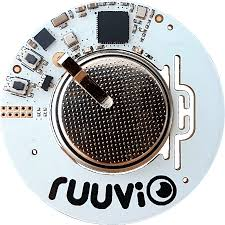

STM8 DIY IoT Boards
|  |  |  |  |
| Fixed Node | Mobile Sensors Node | Io Expander | Servomotor Controller |
- $5 on average per board
- $5 for the development environment HW+SW, with professional grade IDE and real breakpoints debug capabilities.
IoT Node (RF but connected to Power)
PCB design using the STM8S103F bread board with the nRF24L01+ module. Provides connectors for I²C, UART and One wire.
Mobile Sensors Node (Wireless and Cell Coin Powered)
Mobile Sensors Node Specs
- $7 up to ~$12 all equiped
- (STM8L151F3P6) Low Power, 8K ROM, 1K RAM
- (nRF24L01+) Custom 2.4GHz RF module
- (BME280) Temperature Humidity Pressure
- (MAX44009) Ambient Light
- (MRMS211H) x2 Magnetic
Commercial Sensors Tags
It is important to compare with the OnTheShelves solutions before jumping in a DIY design.
The STM8 has the simplicity advantage and the debug tooling low cost, but the plan is to add a high end variant with an ARM based Nordic Chips, to keep compatibility with the low cost nodes. The Ruuvi is for that the best candidate, it has also an open source business model.
|  |  |  |  |
| Broadcom, now Cypress IoT's "Wiced" | TI's "Sensor Tag" | Silicon Lab's "Thunderboard" | Kickstarter Ruuvi's "Ruuvitag" |
| Deep Test | Quick Test | Not Tested | Worth Testing |
| (-) Short battery life, ~weeks | (+) Many sensors | (+) RF Backward compatible with nRF24L01+ | |
| ~$20 | ~$30 | ~$30 | ~$25 |
| Broadcom's BCM20737 ARM-CM3 320K ROM, 60K RAM |
TI's CC2650 ARM-M3, ARM-M0 128K ROM, 8K+20K RAM |
SiLab's BGM111 ARM-M4 256K ROM, 32K RAM |
Nordi Semi's nRF52832 ARM-M4F 512K ROM, 64K RAM |
|
(LIS3DSH) Accelerometer (L3GD20) Gyroscope (LSM303D) Compass |
(MPU-9250) Accel Gyro Compass | (MPU-6500) Accel Gyro | (LISDH12) Accelerometer |
|
(HTS221) Temperature Humidity (LPS25H) Pressure |
(HDC1000) Humidity (BMP280) Pressure (TMP007) Infrared and Ambient Temperature |
(Si7021) Temperature Humidity | (BME280) Temperature Humidity Pressure |
|
|
(OPT3001) Ambient Light (MK24) Magnetic |
(Si1133) UV Index and ambient light (Si7201) Magnetic |
|
IO Expander
Serial port commands issued in an ULN2804 general purpose up to 48V or 500mA per output.
Servomotor Controller
This Board includes an STM8L151F3P6 (Low Power) the nRF24L01+, sensors modules : BMP280 (pressure, humidity, temperature), a MAX44009 (Ambient Light) and MRMS211H (Magnetic switches).